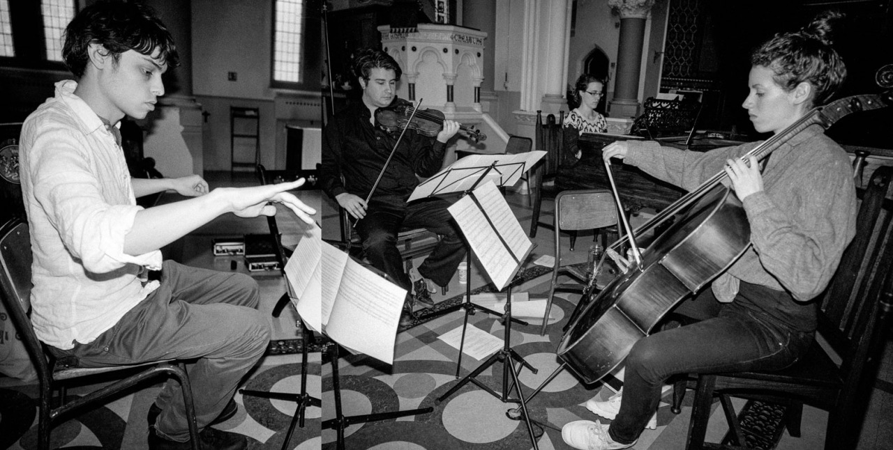

840: New Music for Piano Trio
7.30pm, 14 March 2015 at the St James', Islingon

Photo by Dimitri Djuric
840’s second concert features Ruben Zilberstein (violin), Zoé Saubat (cello) and Katherine Tinker (piano) performing an eclectic selection of new works for piano trio by Adam de la Cour, Lawrence Dunn, Edward Henderson and Lauren Redhead. The programme is completed by Laurence Crane’s Trio for Ros and Peter (1989) and Simon 10 Holt 50 (2007), James Weeks’ Honey Celebration (2005) and music by 840 founders Alex Nikiporenko and Nicholas Peters.